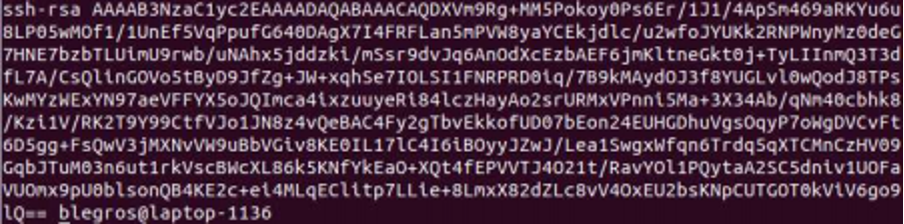

Discover Github
Note
Checkpoint: call us to check your results (don’t stay blocked on a checkpoint if we are busy, we can check ⅔ checkpoints at the same time)
Question
Point to document/report
Tip
Interesting information
Setup
Prerequisites
Even if it seems pretty usual to use Git in the development world, not every project is managed with this tool.
The main goal here is to have you create and set up a Github account before using it for further purposes. Git will be required as well as it is a must have. You might want to start with
Sign up to Github
First step is (if not already done) to sign up to Github with your school mail address and fill the required information. We recommend you to use an individual free plan for the next steps of this project. You can eventually fill the last page but it’s not really important. Select “Complete setup”.
There you are, your (probably not first) Github account is set up. Yay ! Now, let’s move on to the next step !
Project forking and publishing
For this part, we are going to fork the project that will be used for the rest of the lesson (I mean, till the end of the week).
Now you own the project under your Github workspace, you can basically do whatever you want on this project. However we recommend not to modify the whole java and maven content if you still want this project to compile.
First of all, make sure the git CLI is installed on your computer and then clone the project on your computer to be able to modify it locally.
Securing Github access
There are actually two different ways of cloning and publishing a project. By default, Github will propose you to clone by HTTPS link. Copy to clipboard, then open a new terminal and enter :
Git will probably ask you to authenticate in order to be able to clone the repository. It will ask you the same thing every time you want to publish your work on a branch. This might be painful and you don’t want to do this.
The second option is “use SSH” and the link starts with “git@github.com:…”, but there is a prerequisite to use this solution, you’ll need to create an SSH key and have it added to your account. Fine, then tape:
It will ask you to enter and confirm a passphrase, this is for security purposes but we will let it empty for this course. Well done, you’ve generated a new RSA key pair of 4096 bits size.
If you do “ls ~/.ssh” you’ll see new files inside your folder, one is named theNameOfYourKeyPair and the other one theNameOfYourKeyPair.pub. The first one is your private key to NEVER communicate to anyone and the second one is you public key. Let’s take a look to this last one, enter “cat ~/.ssh/theNameOfYourKeyPair.pub”:

Something like this will appear on you terminal, this is the content of your public key that you will communicate to Github. Copy the whole content and past it to you Github account under “Settings” and “SSH and GPG keys”. Click on New SSH key and paste the content of your public key. Give it a name and validate the operation.
Now try to clone the repository again with the git@ prefix. It will ask you to select a key pair to perform the action. Take the one you’ve just indicated to Github and press enter. Now you are able to clone and publish work on your Github repository without entering a password every time, I hope you enjoy this.
Let’s publish
Open the project inside your favorite IDE (I hope it’s IntelliJ) and open the file README.md. Modify this file entering, for example “This project is now mine”. Save it and check that Git has correctly seen you changes
You’ll see you file colored in red. This means that Git has seen you’ve made some modifications to this file, but it will not take them into account once you will publish them. Then ask git to add them to your work.
Actually, we did not ask him to add our file, but to add any modification made to any file inside our working directory. Now if you enter “git status” again you’ll see that your file is colored in green. You work will be taken into account, hopefully. Let’s commit this work:
Now if you try to “git status” again you’ll see that your workspace is “clean”. Git created a new reference with all the changes you’ve made. If you go on and enter:
You’ll see the message of you last commit on top of the references. However you cannot see the changes on the Github website because we did not publish yet our work. Let’s do it !
This command literally means “I want to publish my work on the distant/remote branch master”. And now you can see that your work is published online ! Big up guys !
Configure your repository
Git is one of the most useful tool you’ll find in your developer life. Almost everybody uses it and most of the time you’ll have to work with other people on project using Github.
However you’ll find many people that use it wrongly, and many people that will create things you don’t want to merge in you production branch. Let’s secure a bit our labor to prevent any fool to throw it away.
Go back to your project on the Github webpage and click on settings. Go to Branches and you’ll see that your default branch is master. Fine, it means that every time you connect on your repository, this branch will be displayed. Just under this indication, you’ll see a Branch protection rule. Try to add one.
You’ll see a bunch of options, most of them are very useful working in team (especially asking for pull request and review before merging inside master branch). You can also select options to block push force (when someone does push -f) because it doesn’t take care of Git warning messages that usually prevent you from pushing. As you are working alone on this project we will only add the name “master” to the naming pattern and let the rest as it is. It will only prevent you from doing bad things on you master branch.
Finally, be aware that all the work you do on Github is public by default. Therefore you should or you must NEVER publish any password on your repository. Thankfully you can turn your repository to private from the options and there are Environment Variables that you can set and secure (I mean encrypt) inside your Github repository under Secrets.
Git basic commands
Clone a project
Fetch distant modifications without merging them into your branch
Fetch distant modifications and merge them into you branch
Add your changes to the workspace
Commit your changes
Publish your changes